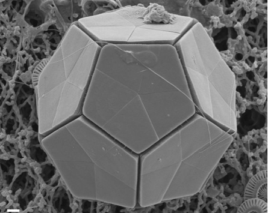

Research

I recently submitted a paper on the physical drivers of phytoplankton bloom initiation in the southern Scotia Sea. The results suggest that flow-topography interactions
are key to understanding nutrient delivery that supports phytoplankton growth. Now I am expanding this work to look at the whole Southern Ocean and consider how ocean mixing processes drive the spatial and
temporal patterns in primary productivity that are evident in the animation on the left showing surface chlorophyll from the MODIS satellite.

In 2016 was a Summer Student Fellow at Woods Hole Oceanographic Institution. I worked with Hyodae Seo on a project investigating how upper ocean variability affects air-sea coupling in the Bay of Bengal. We computed heat and salt budgets of moored observations in order to study the role of freshwater plumes in affecting the spatio-temporal characteristics of monsoon storms. This animation of daily satellite sea surface salinity (from SMAP) shows the arrival of riverwater to the mooring locations. Our results (see Prend et al., 2018) suggest that the freshwater distribution in the Bay is of critical importance to the coupling between the upper ocean and the northward propagating organized atmospheric convective anomalies known as the Monsoon Intraseasonal Oscillations.

At Columbia I also worked on a project in biogeochemical paleoceanography with Alberto Malinverno and Terry Plank investigating the distribution of carbon in deep sea sediments, most of which comes from the calcium carbonate shells of forams and coccoliths such as the Braarudosphaera bigelowii shown on the left (amazing structure, right?). First we compiled lithological information from ocean drilling data to reconstruct the history of the calcite compensation depth for each ocean basin. We then used these CCD-age models to determine time intervals of carbonate deposition, which allowed us to estimate the total mass distribution of carbonate in each ocean basin.